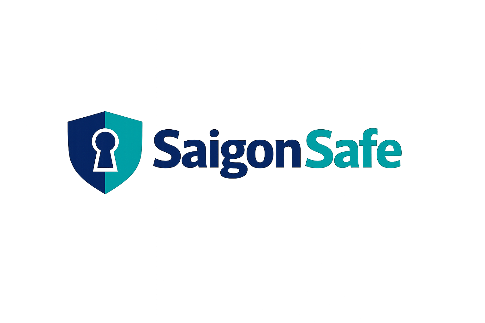

Official downloads and release notes are published through the Saigon Safe GitHub project, not third-party store badges.

Desktop builds and release notes are distributed from the Saigon Safe project. Use the releases page for packaged downloads, or the repository if you want source and issue tracking.